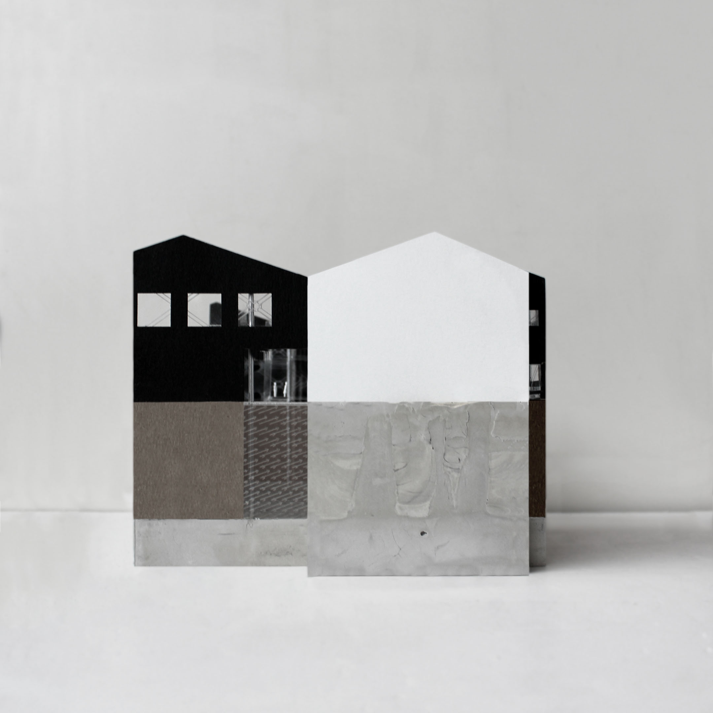
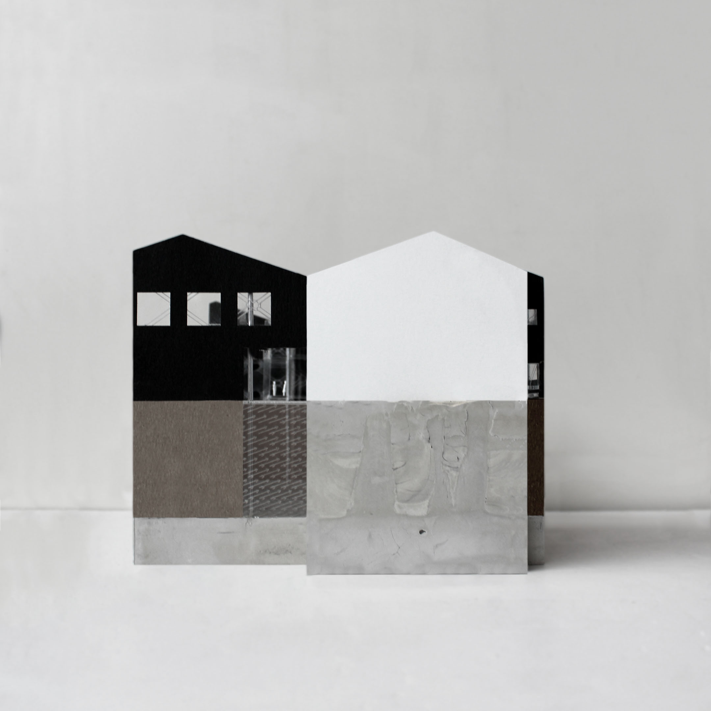

refresh to reorganize, click and drag or just click for project page
My name is Mariah Smith.
My background is in Architecture, and my work with rag rugs began with my research into the relationship between
domestic handicraft and the built environment. I work under the assumption that textiles are an element of
architecture and homemaking is design. Domestic crafts like mending and rag rug weaving are inherently
sustainable,
and I am interested in the care that goes into ensuring the longevity of handcrafted objects. My work is rooted
in
repeatedly re-working/re-interpreting the surfaces and patterns that surround our most intimate selves ;)
I have a Master’s in Architecture from Princeton University (M.Arch received in 2020) and a Bachelor of
Arts in
Architecture from UC Berkeley (B.A. received in 2015)
Email marshesmi@gmail.com for more info
instagram @smithmariahs


 
